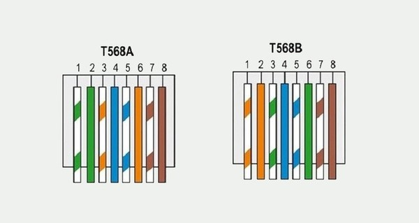

No Cisco Packet Tracer, a configuração de uma rede interna envolve a criação de dispositivos como roteadores, switches, computadores e outros elementos. Esses
dispositivos são configurados para possibilitar a comunicação entre os equipamentos dentro da rede local (LAN).
Servidores são computadores ou sistemas projetados para atender às solicitações de dispositivos clientes por meio de uma ou mais redes, sejam elas locais ou
remotas. Eles são capazes de executar aplicações, fornecer recursos de processamento e oferecer armazenamento de dados, desempenhando um papel
fundamental no funcionamento de redes e serviços.
O sistema DNS na internet funciona de maneira semelhante a uma agenda telefônica, gerenciando o mapeamento entre nomes e números. Os servidores DNS
traduzem os nomes de domínio em endereços IP, determinando qual servidor será acessado pelo usuário ao inserir um domínio no navegador.
HTTP, sigla para Hypertext Transfer Protocol (Protocolo de Transferência de Hipertexto), é o principal protocolo utilizado para a transferência de dados na Internet. Ele
estabelece as bases para a comunicação entre um cliente e um servidor, viabilizando a troca de informações online.
O DHCP facilita a obtenção das configurações de TCP/IP pelos hosts, fornecendo essas informações automaticamente a partir de um servidor DHCP. No Windows
Server 2016, o Servidor DHCP está disponível como uma função de servidor de rede opcional, permitindo sua implantação para distribuir endereços IP e outras
configurações necessárias aos clientes DHCP na rede.
A crimpagem de terminais é um processo mecânico essencial para conectar terminais elétricos a fios condutores de maneira segura e permanente. Essa técnica
garante conexões elétricas confiáveis e duradouras. A ferramenta para crimpar é um alicate, é uma ferramenta indispensável para fixar conectores RJ45
em cabos de rede. Ao aplicar pressão, o alicate insere os pinos metálicos do conector nos fios internos do cabo, estabelecendo uma conexão elétrica
robusta e segura.
A pinagem de cabos de rede é a organização dos fios dentro de um conector, seguindo um padrão definido para assegurar a transmissão correta de dados.

O modelo de referência OSI oferece uma linguagem universal para redes de computadores, permitindo que diferentes tecnologias se comuniquem por meio de
protocolos padronizados ou regras específicas de comunicação. Cada camada do modelo desempenha funções específicas e oferece recursos essenciais
para garantir o funcionamento eficiente da rede.
TCP/IP é uma coleção de protocolos que permite a comunicação entre computadores e servidores, sendo a base para o funcionamento da Internet. Ele integra
o Protocolo de Controle de Transmissão (TCP), encarregado de gerenciar a transmissão de dados, com o Protocolo de Internet (IP), responsável por
identificar os dispositivos na rede.